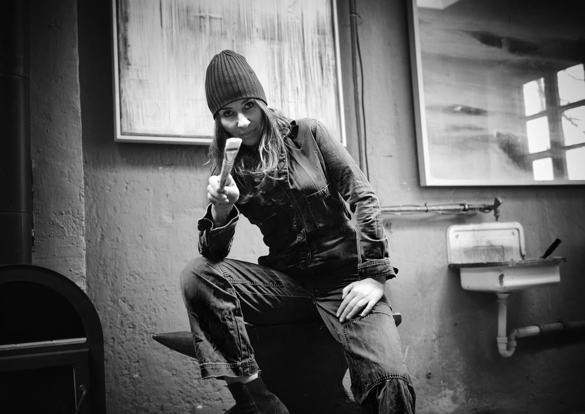
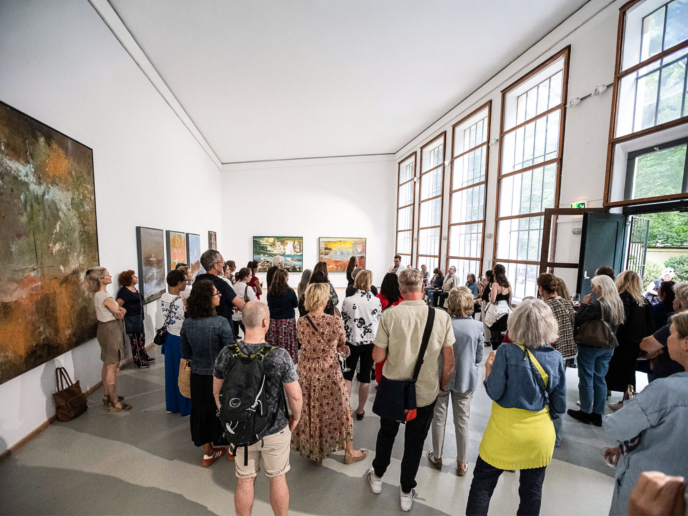
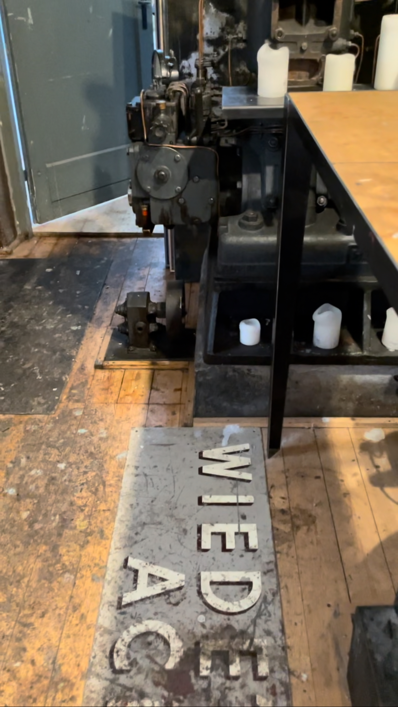
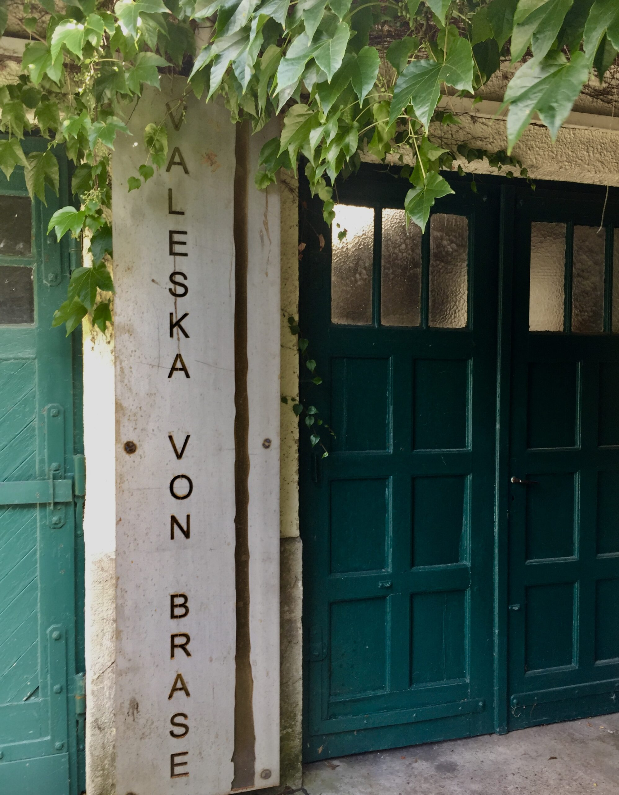
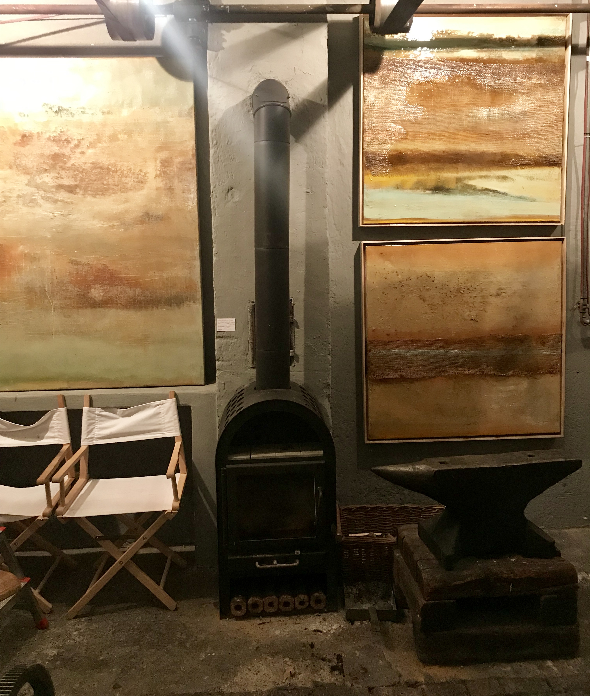

The native of Coburg initially attended the Technical Art School in Hamburg in the late 1990s, followed by an art degree at the Accademia di Belle Arti di Brera in Milan. Since 1998, she has been working as an independent artist in her studio in Munich. Her predominantly large-format paintings, which are part of numerous art collections, have been featured in solo and group exhibitions, including the “Denkraum Deutschland” at the Pinakothek der Moderne in Munich in 2021 and “Totally Now” at the Orangerie in the English Garden in 2024.




